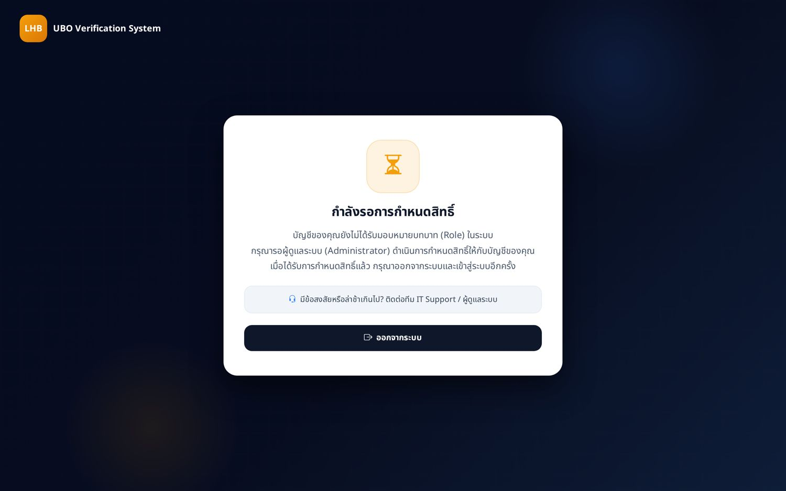
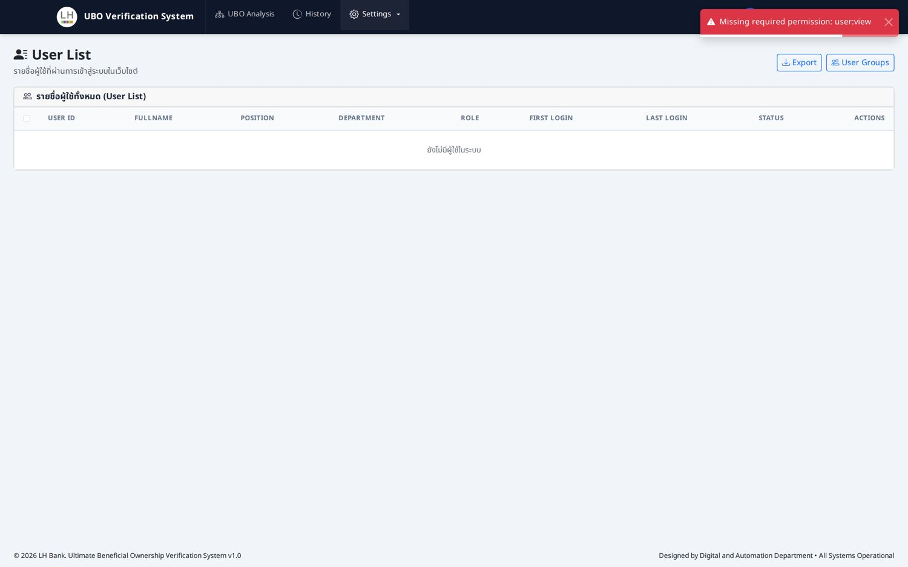
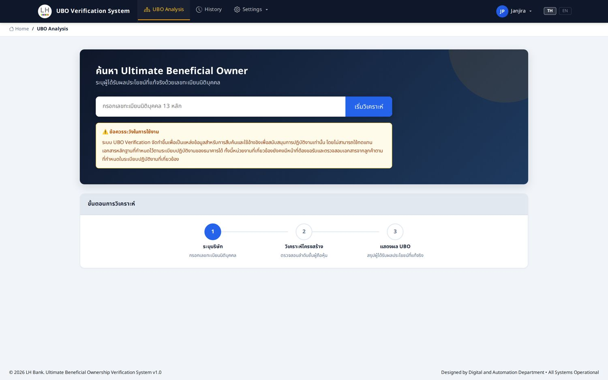

คู่มือภาพจริงจากหน้าระบบ ครอบคลุมการนำผู้ใช้เข้าระบบ การสร้าง Role การกำหนดสิทธิ์ การ Assign ให้ผู้ใช้ทั้งแบบรายบุคคลและแบบกลุ่ม ตลอดจนวิธีตรวจสอบยืนยันผล
หลังจบการอบรม Admin และ ITSD จะสามารถกำหนดสิทธิ์ให้ผู้ใช้ได้อย่างถูกต้องตามหลัก least privilege
เข้าใจโมเดล User → Group → Role → Permission และกฎการ resolve สิทธิ์
รู้ว่าแต่ละ Role เห็นเมนูไหน ใช้หน้าใดได้บ้าง และเห็นหน้า Denied อย่างไร
ขั้นตอนนำเข้าผู้ใช้ สร้าง Role กำหนดสิทธิ์ Assign เดี่ยว/กลุ่ม และตรวจสอบผล
ข้อผิดพลาดที่พบบ่อยในระบบจริง + checklist ก่อนส่งมอบสิทธิ์ให้ผู้ใช้
สิทธิ์เดินทางผ่านกลุ่ม ไม่ผูกตรงกับตัวบุคคล — ตาราง user_roles ว่าง by design
| ชั้น | ตัวอย่างในระบบจริง | เชื่อมด้วย |
|---|---|---|
| User | P9999 (ROOT), 6658, 2103, IT001 … 19 ราย | user_groups |
| Group | Administrator, Analysts, Test1, Default … 7 กลุ่ม | group_roles |
| Role | ROOT, UBO_ADMIN, UBO_ANALYST, Test1 … 8 บทบาท | role_permissions |
| Permission | 42 รหัสสิทธิ์ เช่น ubo:search user:view rbac:manage | — |
อยู่หลายกลุ่มพร้อมกัน → ระบบใช้ Role ที่ priority สูงสุดเป็นสิทธิ์หลัก (max-only)
ผู้ใช้เข้าสู่ระบบครั้งแรกจะได้กลุ่ม Default (Role DEFAULT) แต่ยังถือว่า "รอสิทธิ์" อยู่
สิทธิ์ถูกฝักอยู่ใน token — หลัง deploy เพิ่มสิทธิ์ใหม่ ผู้ใช้ต้อง login ใหม่
เมนูที่แสดงใน Topbar ถูกกรองจากสิทธิ์ของผู้ใช้ทันทีที่ login — ดูภาพจริงทั้ง 3 สถานะ



ขั้นตอนละเอียดพร้อมภาพหน้าจริง — ตั้งแต่นำผู้ใช้เข้าระบบจนตรวจสอบยืนยันผล
AD/HR → login ครั้งแรก → ปรากฏใน Waiting Queue → รอ Admin กำหนดกลุ่ม
ตั้งชื่อ + Priority + เลือก Features เริ่มต้นที่หน้า Roles & Features
เปิดการ์ด Role → ติ๊ก features 4 หมวด → บันทึกสิทธิ์ หลัก least privilege
เลือกผู้ใช้ 1 คนจาก Waiting Queue หรือเพิ่มเป็นสมาชิกกลุ่ม แล้ว verify
สร้างกลุ่ม + ผูก Role ครั้งเดียว แล้วใส่สมาชิกหลายคน หรือ import CSV
login ทดสอบบัญชีจริง + เช็คหน้า Denied + ตรวจ System Log
ใช้หน้าสุดท้ายนี้เป็นเอกสารกำกับการทำงานทุกครั้ง